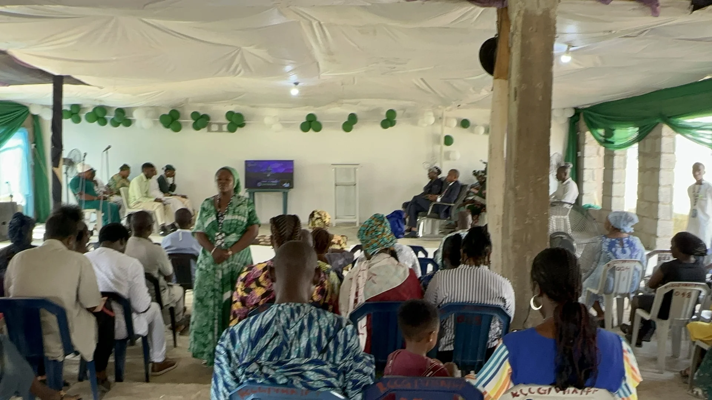
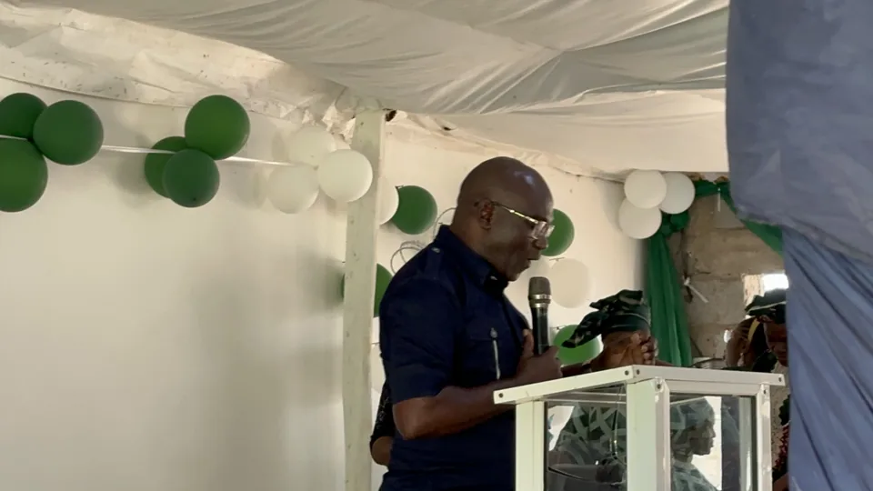
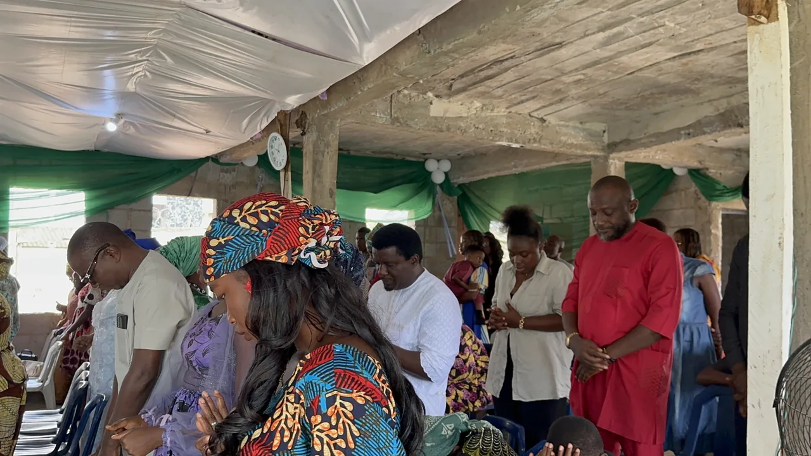
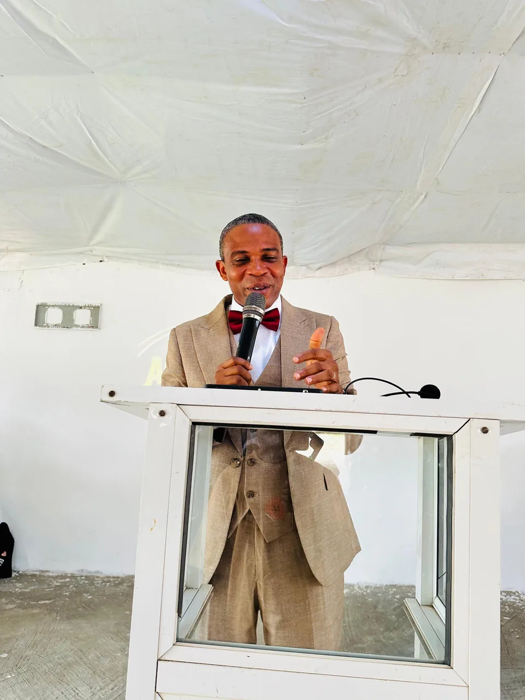
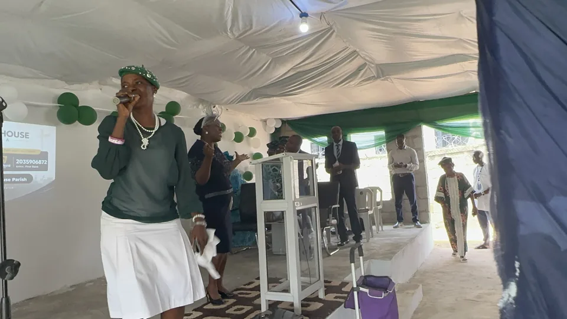
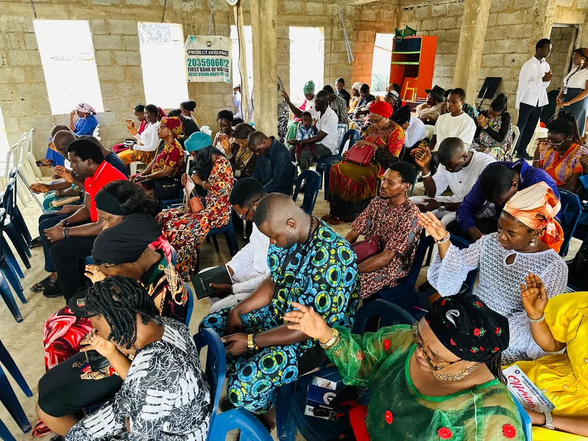
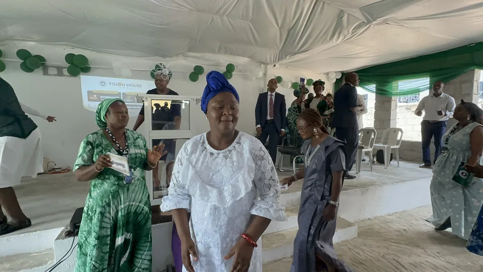

Digging Deep
God’s Word & fellowship

RCCG Vision House Area
A welcoming family of faith, prayer, worship and community. There is a place for you here.
Karu, Nigeria Faith. Family. Fellowship.
Welcome to Vision House
A church family. A place of peace.
A community to grow with.
We are a Christ-centered community where faith is nurtured, prayers are lifted, and God's Word shapes everyday life. Whether you are taking your first step or growing deeper in your walk, there is room for you here.
Come find fellowship, discover purpose, and serve with a family that believes in the transforming love of Jesus.
Discover our heartJoin us this week
Gather with us for the Word, prayer, worship and fellowship. We look forward to welcoming you.
Plan your first visit All gatherings at Vision House, KaruGod’s Word & fellowship
Prayer & encouragement
Our monthly gathering
Come worship with us
Experience Vision House
Join us as we worship, pray, grow in God's Word and experience fellowship together.
Worship with our church family.0:31

Faith grows in community.Our heartbeat
The vision we carry.
The mission we live.
To raise a growing family of believers who know God, walk in His purpose, and impact their communities through faith, love, and service.
To create a Christ-centered community where people can encounter God, grow spiritually through His Word and prayer, discover their purpose, and become positive influences in their families and communities.

Meet our pastor
Pastor, RCCG Vision House Area
Join us for worship, fellowship, prayer and spiritual growth in community.
Connect with Vision HouseLife at Vision House
Our church is a family of people
growing, praying and worshipping together.



A glimpse of our family
Select a photo to take a closer look.
Come find us
Need a hand finding us? Give us a call.
Connect with us
Questions about visiting? We’d love to hear from you.
There’s a place for you
Join our family for Sunday worship, 9:00 AM–11:00 AM.
We look forward to welcoming you to Vision House.